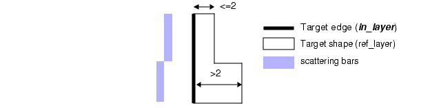

SPACE
OPCSBAR keyword: Required Rule Arguments
Defines a constraining spatial range between edges to qualify and generate scattering bars.
Usage
SPACE range
{SBWIDTH value
{SBOFFSET value |
SBPITCH value |
CENTER [offset] |
CENTERPITCH [offset]}
…}
[WIDTH range]
Arguments
- SPACE range
range — A required range of non-negative floating point numbers specified in user units with no default value. For example:
> a < b
<= a < b
> a
A required argument as a range of one or two numbers qualifying a distance between two edges for which to generate scattering bars. Unbounded space ranges are interpreted as the complement of the bounded counterparts. For example, > a is interpreted as everything not in the <= a interval.
All constraints used for boundary declarations are forced to match internally. Consequently, which ever boundary constraint (<, <=, >, or >=) is first used is applied to all subsequent SPACE keywords using the same value. If subsequent SPACE keywords specifying the same value do use different boundary constraints, a warning message is generated stating:
"WARNING: Constraint > nn.nnn being replaced by >= nn.nnn"Space ranges must be mutually exclusive; that is, the range in one rule cannot overlap the range in another rule in the same operation. There is no default value for this keyword.
- WIDTH range
range — An optional range of floating point numbers with no default value.
An optional argument that defines the width condition of the target shape an associated edge must meet for SPACE to apply. In addition, the edges must meet both required condition and WIDTH condition for SPACE to apply.
If you specify WIDTH and CENTER for positive scattering bars, edges must meet both SPACE and at least one WIDTH constraint to be treated with a centered scattering bar. If STRICTCENTER is specified, then both SPACE and both WIDTH constraints must be met to place a centered scattering bar.
Figure Figure 1 demonstrates the WIDTH argument for generation of positive scattering bars.
Figure 1. WIDTH for Positive Scattering BarsIf in_layer is an edge, Calibre OPCsbar evaluates the width by measuring the polygon on the ref_layer that is associated with the edge as shown in Figure Figure 2.
Figure 2. WIDTH Treatment by Edge- SBWIDTH value
value— A floating point number that must be greater than or equal to MINSBWIDTH, less than MINSBLENGTH, and less than or equal to MAXSBWIDTH. If these conditions are not satisfied, Calibre OPCsbar confuses line-ends during cleanup. There is no default setting for this keyword.
A required argument that specifies the width of scattering bars. One of its associated placement keywords, SBOFFSET, SBPITCH, CENTER, or CENTERPITCH, is required.
You must specify SBWIDTH for each placement argument, even if all scattering bars are the same width. Depending on the rule and the placement argument, this keyword defines the width of either one or two scattering bars.
- SBOFFSET value
value — A positive floating point number. There is no default for this setting.
A required argument that defines the placement for scattering bars. The nearest edge of a scattering bar is placed by the specified SBOFFSET value from any valid in_layer edge.
For positive scattering bars, the distance is measured between the scattering bar and the outside of the nearest valid in_layer edge. This is the default. For negative scattering bars, the distance is measured between the scattering bar and the inside of the nearest valid in_layer edge.
Depending on the rule and the data, each SBOFFSET triggers the generation of either one or two scattering bars as shown in Figure Figure 3.
Figure 3. SBOFFSET Usage- SBPITCH value
value — A positive floating point number. There is no default for this setting.
This argument defines the placement for scattering bars, expressed as the distance between the scattering bar center-line and the center of the feature at the nearest valid edge. SBPITCH requires a constrained WIDTH specification that must be satisfied in order for the rule to apply. Only positive scattering bars are supported with SBPITCH.
Depending on the rule and the data, each SBPITCH triggers the generation of either one or two scattering bars. Figure Figure 4 demonstrates SBPITCH usage.
Figure 4. Scattering Bar Generation with SBPITCH- CENTER [offset]
offset — A positive floating point number. There is no default for this setting.
This argument defines the placement for scattering bars generated by SPACE, relative to the center line of the space. Without offset, Calibre OPCsbar generates a single scattering bar an equal distance between the two valid edges that satisfy the SPACE condition. For spaces an even number of user units wide, scattering bars may be 1/2 user unit off center, due to snapping. With offset, Calibre OPCsbar generates two scattering bars offset from the center line by a distance of offset.
You can only specify one CENTER placement argument for each SPACE condition; if you have several sets of scattering bars for a SPACE condition, only one can use the CENTER placement argument. If you specify WIDTH and CENTER for positive scattering bars, edges must meet both SPACE and at least one WIDTH constraint to be treated with a centered scattering bar. If STRICTCENTER is specified, then both SPACE and both WIDTH constraints must be met to place a centered scattering bar. CENTER supports NEGATIVE scattering bars if a WIDTH constraint is specified.
For unbounded spaces, CENTER has no meaning. CENTER is supported only for two valid parallel edges.
Figure Figure 5 illustrates the behavior of CENTER.
Figure 5. Scattering Bars Generated Using CENTER- CENTERPITCH [offset]
offset — An optional positive floating point number. The default for this setting is 0, indicating there is no offset from the center pitch line, and therefore resulting in only one scattering bar generated between qualified shapes.
This argument defines the placement of generated scattering bars, expressed relative to the center line of the pitch of two qualified target shapes. CENTERPITCH requires a constrained WIDTH specification that must be satisfied by both qualified target shapes in order for the rule to apply. Only positive scattering bars are generated by CENTERPITCH.
You can only specify one CENTERPITCH placement argument for each SPACE condition. If you specify WIDTH and CENTERPITCH for positive scattering bars, edges must meet both SPACE and WIDTH constraints to place the centered scattering bar.
CENTERPITCH does not support NEGATIVE scattering bars. For unbounded spaces, CENTERPITCH has no meaning. CENTERPITCH is supported only for two valid parallel edges.
If no offset is specified, Calibre OPCsbar creates a single scattering bar, equidistant between centers of the features containing two valid edges that satisfy the SPACE condition, as illustrated in Figure Figure 6.
Figure 6. Scattering Bars Generated Using CENTERPITCH without OffsetWith an offset specified, Calibre OPCsbar creates two scattering bars, offset from the center line found equidistant between centers of the features containing two valid edges that satisfy the SPACE condition. This is illustrated in Figure Figure 7.
Figure 7. Scattering Bars Generated Using CENTERPITCH with Offset
Description
A required keyword cluster that defines the space and, optionally, width conditions shapes must meet for the rule to apply. SPACE and SPACELAYER are mutually exclusive within a single OPCSBAR command.
You must specify one placement argument (SBOFFSET, SBPITCH, CENTER, or CENTERPITCH) for each SPACE keyword.
For a bounded space, Calibre OPCsbar generates scattering bars parallel to each valid boundary edge. For an unbounded space, Calibre OPCsbar generates scattering bars parallel to the single boundary edge, with the placements as specified by SBOFFSET. Placements specified by CENTER have no meaning for unbounded spaces. Because a space fits within an unbounded range does not mean it is an unbounded space. Any space having two boundary edges is bounded. For a complete discussion of spaces and how Calibre OPCsbar evaluates them, refer to “Understanding Spaces”. Figure Figure 8 depicts bounding concepts.
Examples
Example 1 — SPACE for positive scattering bars
Figure Figure 9 demonstrates SPACE generation of positive scattering bars.

Example 2 — SPACE for negative scattering bars
Figure Figure 10 demonstrates SPACE generation of negative scattering bars.